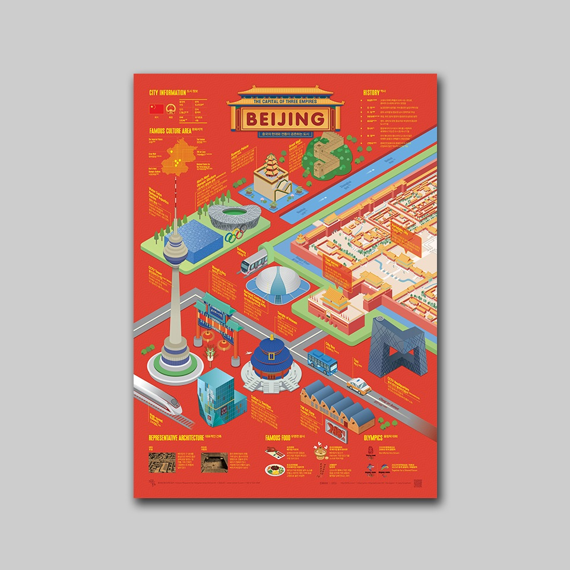
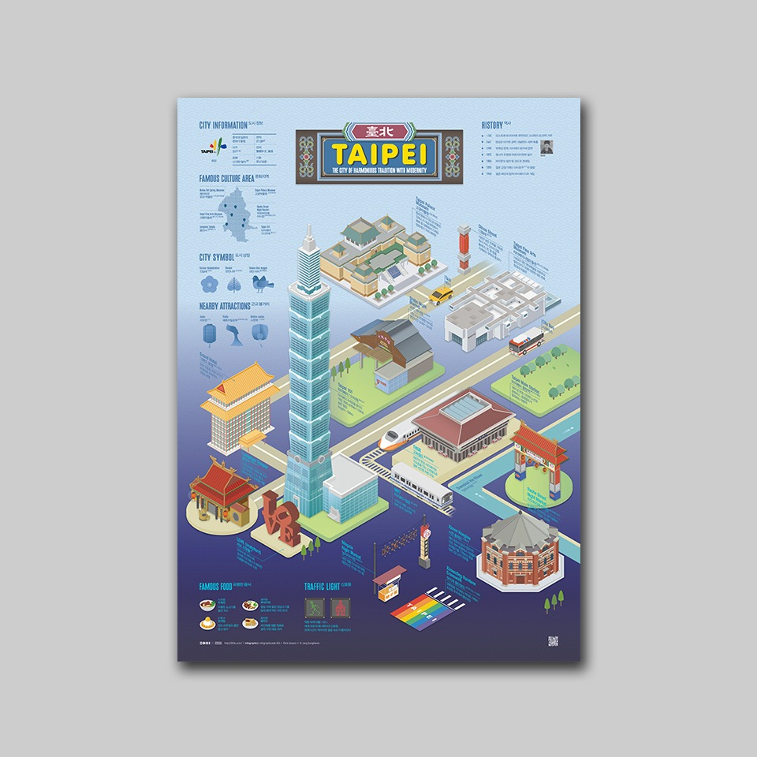
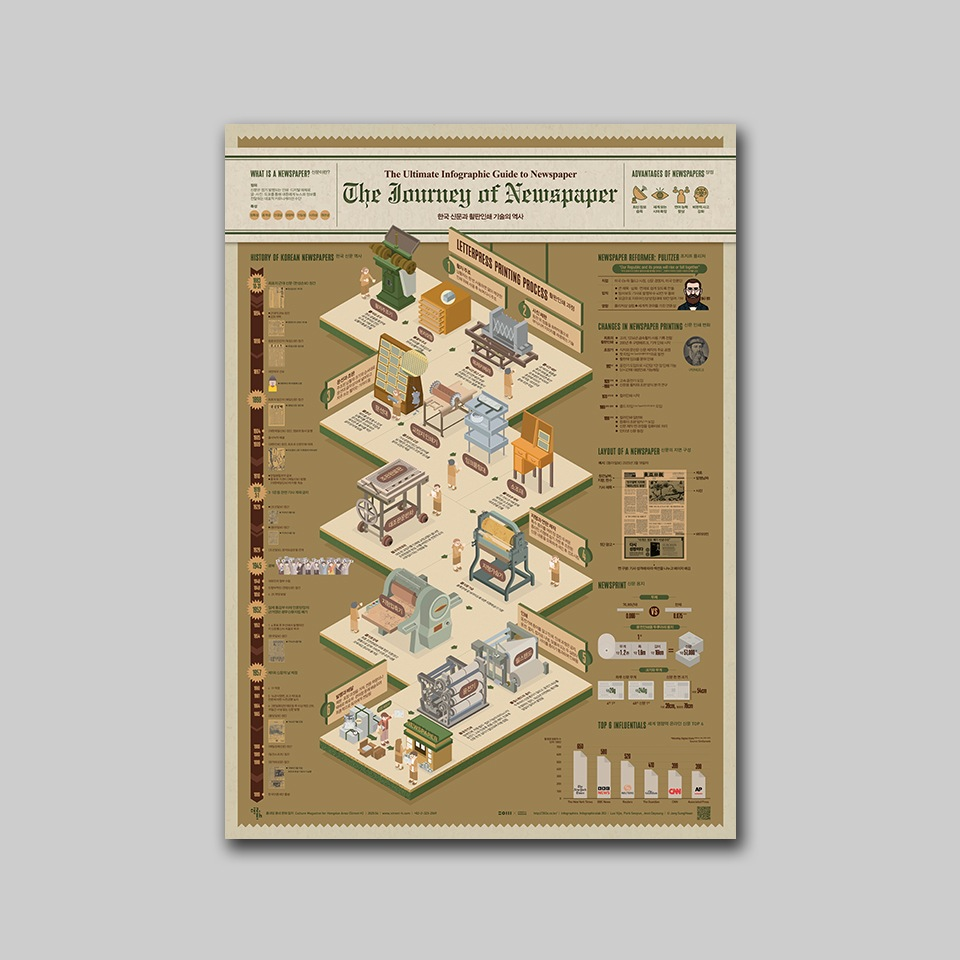
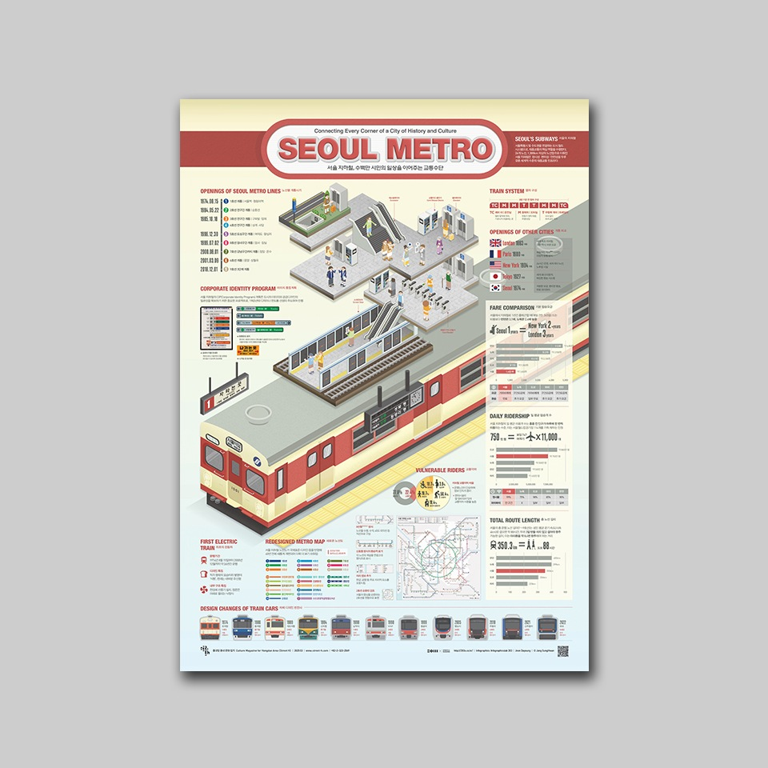
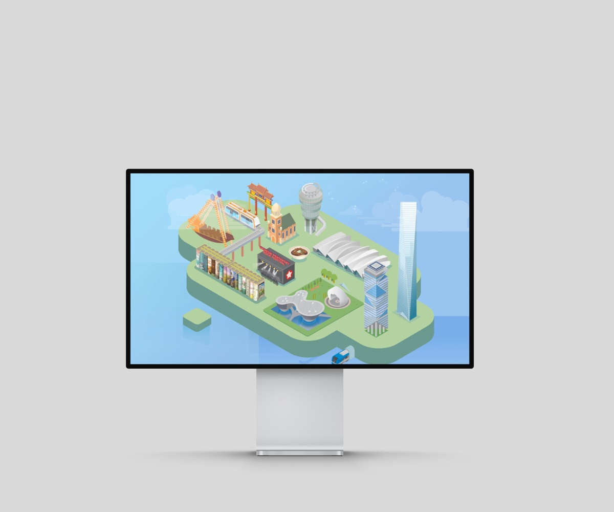
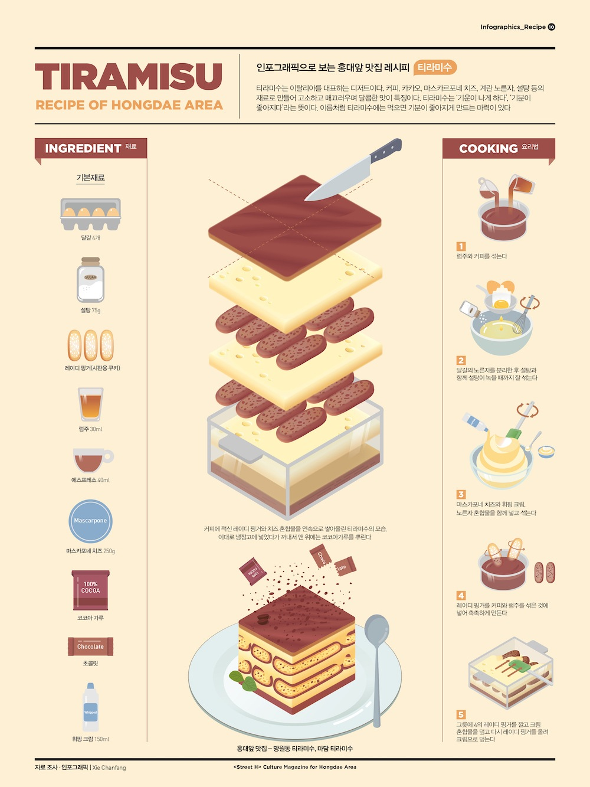

중심이 큰 도시 맵베이징Support큰 궁궐과 작은 랜드마크를 사선 도로·물길로 연결합니다. 중앙 콜로세움과 네 필수 장소의 규모 차이 및 배치에 적용합니다.203X 작품 원문 ↗
연결된 디오라마타이베이Support서로 다른 시설을 공통 사선 시점의 지반과 교통축으로 묶습니다. 개별 장소를 구별하면서 한 세계로 읽히게 하는 방식입니다.203X 작품 원문 ↗
공정의 공간화신문 제작 과정CoreBasic인물과 장비가 있는 작업 장면들을 지그재그 순서로 배열합니다. 폼페이의 재료 준비·혼합·시공을 연결하는 데 적합합니다.203X 작품 원문 ↗
층별 절개와 이동서울 지하철DetailSupport지상·대합실·승강장·열차를 입체 층으로 드러냅니다. 콜로세움의 바닥 아래 공간과 수도교 상부 수로를 설명하는 방식으로 참고합니다.203X 작품 원문 ↗
하나로 묶인 도시 디오라마인천광역시청_잇고잇다Support연결된 녹색 지반 위에 여러 시대와 기능의 랜드마크가 공존합니다. 확인 범위는 대표 정지 이미지이며 영상 전체의 전개는 분석하지 않았습니다.203X 작품 원문 ↗
재료·분해도·제조 단계티라미수BasicDetail중앙 대형 분해도, 왼쪽 재료 목록, 오른쪽 제조 단계의 역할이 구분됩니다. 재료 이름과 큰 콘크리트 확대 도식을 연결하는 방식에 적용합니다.203X 작품 원문 ↗